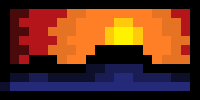

Telefon: 38 55 24 203, e-mail: zs@zsvltava.cz, IČ: 00666131, mapa

SunSet - Tomáš Kubů, 7r< Školní rok 2026/2027
16.11.2026 lichý týden
Otmar
MÁME PRÁZDNINY!
Ředitelské volno
Ředitelské volno
Den boje za svobodu a demokracii
Beseda s kariérovým poradcem (pro rodiče 9. tříd) v aule
Podzimní koncert sborů Vox Novus a Imbus Praha, 19.00 kostel Sv. Rodiny 19.00
Slavnostní koncert k otevření Slávie - Canzonetta, Vox, orchestr JD, Slávie 19.30 hod.
Soustředění Da Capo 14.00 - 17.30 v aule
Třídní schůzky
Benefiční koncert Canzony pro Ranou péči, Slávie 19.00 hod.
Mezinárodní festival vánoční a adventní hudby (Vox Novus, Canzona) 3. - 6.12. Bratislava
Vystoupení Canzonetty v rámci Dne otevřených dveří, aula 17.00 hod. v aule
Adventní koncert Canzonetty pro JU, Katedrála sv. Mikuláše 19.00 hod.
Rybova mše s Třeboňským lázeňským orchestrem (Vox Novus, Canzona)
Třídní koncert žáků O. Strnadové 17.00 v aule
Vánoční koncert JF, Vox Novus a Canzona 19.00 hod., Kostel sv. Anny
Vánoční koncert JF, Vox Novus a Canzona v 16.00 a v 19.00 hod., Kostel sv. Anny
Vzdělávání je mnohem více než jen poskytování znalostí a schopností, jejichž prostřednictvím jsou dosahovány naše omezené cíle. Jde také o to, otevřít dětem oči, aby viděly potřeby a práva ostatních. Musíme svým dětem ukázat, že jejich činy mají univerzální rozměr. A musíme najít způsob, jak vybudovat jejich přirozený pocit empatie, aby cítily pocit zodpovědnosti k ostatním. Protože to je to, co nás pohání k činnosti. (Dalajláma)
ZŠ a ZUŠ Bezdrevská 3, České Budějovice, Česká republika - CZECHIA, EUROPE
Telefon: +420 385 524 203, e-mail: zs@zsvltava.cz, IČ: 00666131 | GPS: 48.9925042N, 14.4520092E
Veřejný profil zadavatele | MŠMT | RVP | 16.11.2026